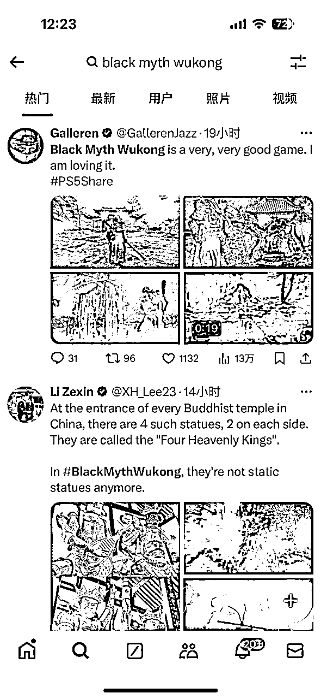

来源：https://za6kyadmdr.feishu.cn/docx/VEiNdXLYuo57KexWzozctBHcndf
盼星星盼月亮，终于等到大圣来袭！
《黑神话：悟空》一上线，整个游戏圈就像被孙悟空的金箍棒敲了一下，瞬间炸开了锅。Steam一小时内在线人数破百万，一天突破200万，这可是国产游戏从未达到过的高度。资本市场也跟着沸腾，相关概念股纷纷涨停，互联网仿佛一夜之间都在谈论这款游戏。大家不禁好奇，究竟是怎么操作的，让这款游戏如此火爆？
四年磨一剑：悟空不负众望
《黑神话：悟空》可不是凭空冒出来的“黑马”，这背后可是中国游戏产业多年来的梦想。早在2020年首次宣传片露面时，这款游戏就吸引了不少眼球。黑神话由游戏科学团队精心打磨，团队创始人冯骥曾参与过《剑侠情缘》系列的开发，堪称经验丰富。为了这款游戏，他们不惜投入大量资金和时间，一步一个脚印，终于让孙悟空重返玩家视野。
这13分钟的实机演示视频一出，简直让人眼前一亮：高还原的《西游记》场景、精美的角色设计、流畅的战斗动作，玩家们看得热血沸腾。全球范围内，这段视频播放量火速破千万，瞬间点燃了玩家们的期待。
但光有游戏品质和期待还不够，市场上好游戏不少，为何《黑神话：悟空》能脱颖而出？背后的原因不仅在于技术与内容的硬实力，还与精心策划的营销策略密不可分。你可能会说，好的游戏不愁没人玩，但在这个信息爆炸的时代，如果没有一套强有力的推广手段，再好的产品也容易被淹没。
总结：
想要火爆，《西游记》这个经典IP自然功不可没。孙悟空是80后、90后心中的超级英雄，如今，这个童年记忆化身为3A大作的主角，情怀值拉满。对中国玩家来说，这种感觉就像儿时的梦想突然成真，让人忍不住想要一试身手。
而且，这不仅仅是情怀，它还是深植于中国传统文化的超级IP。游戏中的每一个细节都经过了精心打磨，力求还原《西游记》的经典场景和角色形象，比如，那个毛发根根分明的孙悟空形象，不仅唤起了国内玩家的情感共鸣，也让国外玩家眼前一亮。
西游文化在东亚和东南亚地区本就有影响力，这种深厚的文化基础为游戏在国际市场打开了一扇大门。Steam上的数据就是最好的证明：上线首周，30%以上的销量来自海外市场，其中不少是欧美玩家。看来，悟空这次是真的“出海”成功了。
除了国区、中国香港以及中国台湾地区登顶外，《黑神话》在美国、日本、新西兰、泰国、新加坡、澳大利亚、巴西、加拿大等地区同样登顶。
全球热销排名第一
美国热销排名第一
日本热销排名第一
总结：
《黑神话：悟空》作为国产3A大作，不仅在内容和玩法上表现出色，更在技术上取得了重大突破，特别是在NVIDIA DLSS 3.5和全景光线追踪的支持下。
NVIDIA DLSS 3.5是最新的深度学习超级采样技术，包含了光线重建功能。这项技术能够通过AI算法精确处理光线追踪中的噪点，使得游戏画面的色彩、反射和光影效果更加逼真和细腻。DLSS 3.5不仅仅是在帧数上的提升，更是对图像质量的全方位优化。
DLSS 3.5 的特别之处在于，它对所有RTX显卡都提供支持，虽然RTX 40系列显卡的表现最佳，但使用RTX 20和30系列显卡的玩家也能享受到显著的性能提升。在《黑神话：悟空》中，即使在开启全景光线追踪的情况下，DLSS 3.5也能确保游戏在4K分辨率下达到流畅的帧率表现。
全景光线追踪则将游戏的视觉表现推向了电影级别的高度。这项技术能够在场景中模拟真实的光线传播路径，包括反射、折射、阴影等复杂的光影效果，让游戏中的每一帧画面都充满了细腻的细节和真实的光感。
在实际测试中，RTX 4090显卡在4K分辨率、全高画质和全景光线追踪开启的情况下，游戏能够接近100帧的表现，展现了顶级硬件的强大性能。而对于RTX 4070 Ti等中高端显卡，游戏也能在2K分辨率下保持流畅运行，即便在高负载场景中，帧率也能稳定在60帧以上。
这些技术的结合，不仅仅是为了追求画面上的极致，更是为了让玩家在沉浸式体验中，感受到前所未有的真实和震撼。这也使得《黑神话：悟空》成为了2024年最受瞩目的游戏之一，不仅在国内市场，也在全球范围内引起了广泛关注。
总的来说，NVIDIA DLSS 3.5和全景光线追踪的应用，让《黑神话：悟空》在视觉和性能上达到了新的高度。
总结;
《黑神话：悟空》的成功，离不开社交媒体的强力助攻。说白了，现在的信息传播离不开网络，谁掌握了社交媒体的“流量密码”，谁就能引爆市场。游戏科学团队显然深谙此道，从最初的视频发布到游戏正式上线，社交媒体成了他们的主战场。
B站作为国内年轻人最集中的平台，自然是首选阵地。早在2020年，第一支实机演示视频就在B站发布，两小时内冲上热门榜首，24小时播放量破千万。可以说，B站成了《黑神话：悟空》的大本营，每次有新内容发布，都会引发大量讨论，话题热度持续不减。
除此之外，全网的博主也自发加入了这场盛宴。游戏上线当天，数不清的游戏博主，非游戏博主开始直播打怪，相关直播间累计观看人数超过500万，场面相当火热。这种自发性的推广，不仅提高了游戏的曝光度，还增强了玩家之间的互动，让《黑神话：悟空》成为了真正的全民热点。
玩家的参与也极大推动了游戏的火爆。社交媒体上，网友们掀起了一波“请假潮”，纷纷以各种理由请假，只为第一时间体验这款游戏。有人开玩笑说，大圣的面子可真大，连老板都得让路。更有玩家借此机会创造了各种梗，什么“收到《黑神话：悟空》的男朋友当场感动到落泪”、“黑神话的BOSS简直是‘心魔’”等，成为了热门话题，进一步推动了游戏的热度。
热梗：8月20日请假
热度：多家公司为黑神话悟空放假
各种二次创作层出不穷。
美妆博主挑战游戏中的妖精妆容，简直神还原，吸引了大量粉丝围观点赞
；有玩家自发讨论八戒这个角色的萌点，甚至专门做了分析视频，引发了一波新的热议。这种多元化的内容生产，不仅丰富了游戏的社交媒体表现力，也让它更加深入人心。
AI技术达人也赶上了这波热潮，用AI复刻了《黑神话：悟空》的宣传片，展示了技术与文化的完美结合。这种跨界合作，不仅让游戏在技术圈内名声大噪，也巩固了其在玩家心中的地位。
跨界联名：猴哥不止会打怪，还能带货
除了在社交媒体上大放异彩，《黑神话：悟空》还通过一系列跨界合作进一步扩大了影响力。说起跨界合作，这可是营销界的“杀手锏”。瑞幸咖啡就是这次合作的主角之一，他们推出的“腾云美式”，一上线就卖到断货，成了游戏迷们的“续命水”。瑞幸的销售额因此大涨，不少人感叹大圣的号召力简直无人能敌。
海信、联想这些大品牌也没闲着，联名款电视、游戏本应运而生，成为了玩家们的梦幻装备。尤其是这些产品的设计，处处体现着《黑神话：悟空》的元素，让人忍不住想要拥有。事实证明，这些联名产品一经推出，销量一路飙升，成了市场上的热门商品。这种“游戏+品牌”的合作模式，不仅为游戏带来了更多的曝光机会，也为品牌注入了新的活力。
这种跨界合作的成功，不仅在于双方资源的整合，更在于它抓住了玩家的心理。对于很多玩家来说，能够用上与自己喜欢的游戏联名的产品，本身就是一种满足感和归属感。正是这种心理驱动，让跨界合作成为了营销的利器。
总结：
当然，《黑神话：悟空》不仅在国内风生水起，国外的玩家也为之疯狂。这款游戏不仅是一款3A大作，更是一次文化输出的尝试。早在2020年，游戏科学就已经着手布局国际市场，通过与海外博主合作、在国际游戏展亮相，逐步打开欧美市场的大门。
在全球推广过程中，团队特别注重将中国文化元素融入游戏，形成了独特的东方魅力。比如在科隆游戏展上，团队放出了一段以陕北说书为背景的游戏视频，这种将传统文化与现代游戏结合的方式，令国外玩家耳目一新。可以说，《黑神话：悟空》不仅是在打怪，也是将中国文化传递给世界的一个窗口。
从数据上看，《黑神话：悟空》在全球范围内的表现也相当亮眼。截至2024年8月，这款游戏的全球评分达到了82分，超过50家国际媒体给予了好评。孙悟空不仅征服了国内玩家，也在国际市场上斩获了不少粉丝。
海外用户自发性分享与传播

TikTok上也不例外，获得大量的传播和裂变，单挑视频片头播放高达780万曝光
有意思的是，分析TikTok广告营销数据
在pipiads上看到了《黑神话：悟空》的广告数据
Newagg的GPU 和视频图形设备广告视频
广告播放：110万
视频广告详情
猴哥的未来：新传奇，待续写
《黑神话：悟空》的成功绝非偶然，它的每一步营销策略都经过了精心策划。从情怀满满的市场定位，到全网开火的社交媒体，再到跨界合作和文化出圈，黑神话团队用事实证明了中国游戏也能走出一条独特的成功之路。
可能，《黑神话：悟空》不是最顶尖的游戏，但是是最有开创性和意义的游戏。我相信，未来会有更多的国产3A出现。致敬每一个埋头赶路的“天命人”。